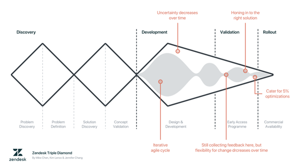

Leeswijzer
De opdracht
Building Attention is een project van Het Lectoraat Interaction Design (Het Lectoraat IXD) waarin het doel is om het gebouw Strijp TQ gebruiksvriendelijk te maken. Het gebouw wordt gebruikt door studenten, docenten en bezoekers van Fontys HBO-ICT, die verschillende problemen ervaren binnen het gebouw. De opdracht had als doel één van de vele problemen die de gebruikers van het Strijp TQ-gebouw ervaren, op te lossen binnen een behapbare scope om tot een succesvolle oplossing te komen. Dit sluit aan bij de voorkeur van de stakeholders voor een interactieve ervaring of installatie die de creativiteit van de gebruikers binnen Strijp TQ weerspiegelt.
Aan het begin van de stage werd voor de opdracht verschillende onderzoeksvragen opgesteld om erachter te komen wat de problemen zijn voor de gebruikers van Strijp TQ. De hoofdvraag was toen nog: “Hoe ontwerp je een gebruiksvriendelijke interactieve installatie binnen Strijp TQ dat de gebruikers informeert over activiteiten binnen het gebouw waardoor ze locaties, personen of projecten effectief en snel vinden?” met daarbij de belangrijkste deelvraag “Wat zijn de problemen van de doelgroep binnen Strijp TQ? ”. De design challenge die hier toen werd gebruikt was: “Design een interactieve ervaring/installatie voor gebruikers van Strijp TQ dat ze informeert over activiteiten binnen het gebouw waardoor ze locaties, personen of projecten effectief en snel vinden.”
Binnen dit project werd er gebruik gemaakt van de Triple Diamond methode. Omdat het proces begint bij het analyseren van verschillende problemen dat leid een oplossing voor één probleem.
Het Proces
Het Probleem
De opdracht begon met het opstellen van een projectplan waarin nog niet duidelijk was wat het exacte probleem was. Vervolgens zijn er verschillende methodes gebruikt om erachter te komen wat de problemen zijn bij de gebruikers van Strijp TQ, zoals interviews, observatie en het maken van verschillende producten met de doelgroep. Daarna is de verzamelde informatie geanalyseerd en een Empathy Map gemaakt om de problemen van de doelgroep beter te begrijpen. Hieruit werd geconcludeerd dat er een groot navigatieprobleem is bij de doelgroep. Zowel studenten, docenten en bezoekers hadden op verschillende aspecten moeite met het navigeren binnen Strijp TQ. Om ervoor te zorgen dat het project niet te groot wordt is er samen met de stakeholders de keuze gemaakt om te focussen op de problemen van de studenten binnen Strijp TQ. Om de problemen van de studenten beter in kaart te brengen zijn er verschillende Persona’s en User Journeys gemaakt.
Hierdoor kon er geconcludeerd worden dat de studenten allemaal frustraties hadden dat ze niet de weg kenden binnen het gebouw. Vanuit deze problemen kon er potentiële oplossingen worden bedacht, dat uiteindelijk ervoor zorgde dat het kernprobleem boven water kwam. Het probleem is dat studenten het gebouw niet goed genoeg kennen, waardoor ze moeite hebben om de weg te vinden binnen Strijp TQ.
Hierdoor kon een het projectplan worden veranderd en werd de nieuwe design challenge: “Design een interactieve ervaring/installatie voor de studenten van Strijp TQ die hen informeert over activiteiten binnen het gebouw waardoor ze locaties effectief en snel vinden.” De hoofdvraag dat vanaf dit punt werd onderzocht was: “Hoe ontwerp je een gebruiksvriendelijke interactieve ervaring/installatie binnen Strijp TQ die studenten informeert over activiteiten binnen het gebouw waardoor ze locaties effectief en snel vinden?” en de belangrijkste deelvraag was: ”In welke interactieve vorm kun je studenten het gebouw leren kennen, waardoor zij gedurende semesters makkelijk kunnen navigeren binnen Strijp TQ”. Deze deelvraag is gekozen omdat het beantwoorden hiervan cruciaal is voor het ontwerp van de interactieve ervaring/installatie en daarmee voor het oplossen van de design challenge.
Het Concept
Er vond eerst een brainstormsessie plaats om mogelijke oplossingen te bedenken voor het kernprobleem. Vervolgens zijn deze ideeën voorgelegd aan de stakeholders en werd het idee van een onboarding-spel, een scavenger hunt, door hen gekozen. Om te valideren of de doelgroep geïnteresseerd is in een scavenger hunt en of het idee potentieel het probleem kan oplossen, is er een enquête opgesteld om dit te testen. Uit de enquêteresultaten is gebleken dat fysieke kennismaking met het gebouw helpt bij het onthouden van de locaties en dat een onboarding programma relevant is voor studenten. Het is namelijk gebleken dat zelfs na drie jaar op Strijp TQ te hebben gezeten, veel studenten de locaties binnen het gebouw nog steeds niet kennen. Echter, de huidige doelgroep is niet geïnteresseerd in een onboarding programma en daarom zal de focus worden gelegd op het aanbieden van een onboarding programma voor nieuwe studenten die voor het eerst op Strijp TQ les zullen hebben.
Na het trekken van deze conclusie, werd het project opgedeeld in wekelijkse sprints tot het einde van de stage. Elke week werd er een nieuwe versie van de scavenger hunt gedemonstreerd. Bij de eerste sprint demo is het eerste concept van de Fontys onboarding scavenger hunt gepresenteerd.
Prototyping
Als eerst werd het eerste low fidelity prototype gemaakt en getest. Op basis van de testresultaten en feedback is geconcludeerd dat de scavenger hunt beter werkt met kleinere teams en minder puzzels. Bovendien moeten alle activiteiten binnen de scavenger hunt gericht zijn op teambuilding, om eventuele frustraties en irritaties onder de spelers te vermijden. Na het maken en testen van het tweede low fidelity prototype is er samen met de stakeholders besloten om het project verder af te bakenen. Het uiteindelijke product zal gericht zijn op de nieuwe studenten van de DXD en XR Minor. Zei zijn de testgroep voor de eerste versie van de onboarding evenement aangezien hun leerlingen uit een kleinere groep bestaan en voor het eerst op Strijp TQ komen. Na het project zal worden bepaald of het ook ingezet kan worden door andere PLOU’s. Hierdoor werd de design challenge: ”Ontwerp een interactieve onboarding-ervaring voor nieuwe minor studenten op Strijp TQ, die door hun PLOU kan worden gebruikt om hen bekent en vertrouwd te maken met het gebouw, zodat ze snel en efficiënt naar de verschillende locaties kunnen navigeren”. Het derde low fidelity prototype werd ontwikkeld vanuit de feedback van het tweede prototype. Deze scavenger hunt was meer gefocust op teambuilding en samen met je team iets maken, in plaats van een puzzel oplossen. De stakeholders waren enthousiast over de derde versie van de onboarding scavenger hunt event waardoor er besloten was om een high fidelity prototype ervan te maken. Het high fidelity prototype bestaat uit een concept document en een ondersteunde applicatie van de game. Dit prototype werd een keer met collega’s getest en werd voor validatie getest met studenten die nog nooit op Strijp TQ zijn geweest.